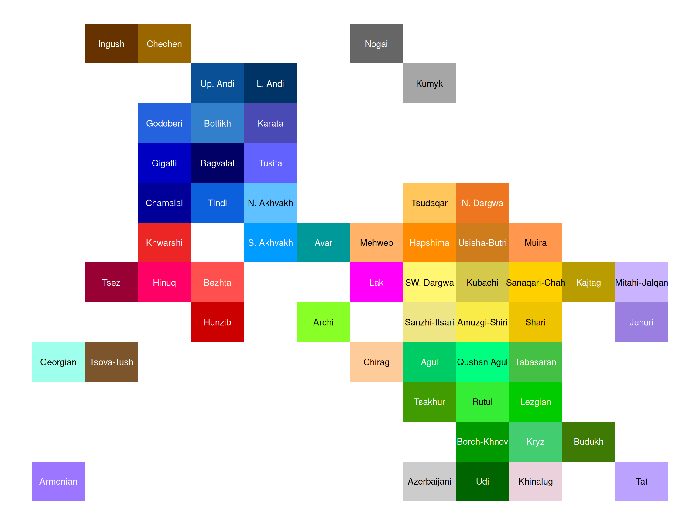
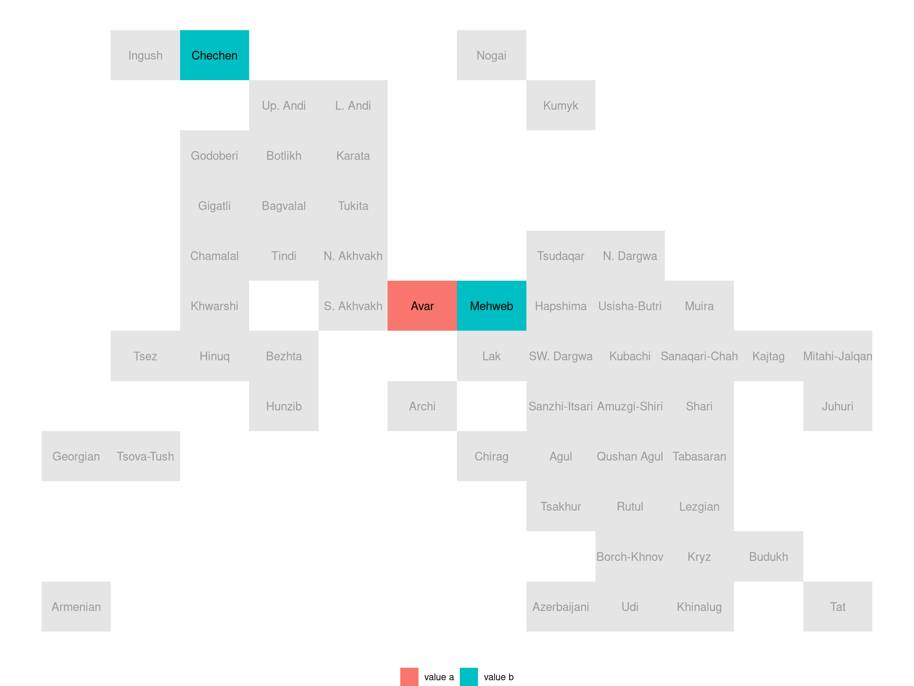
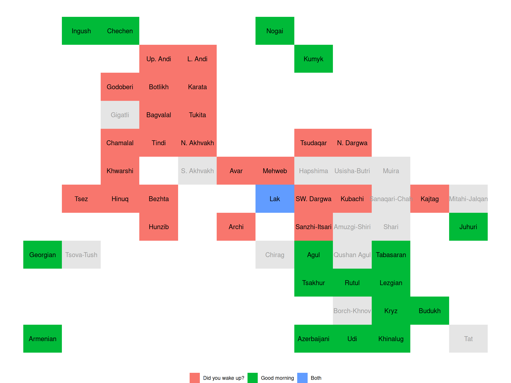
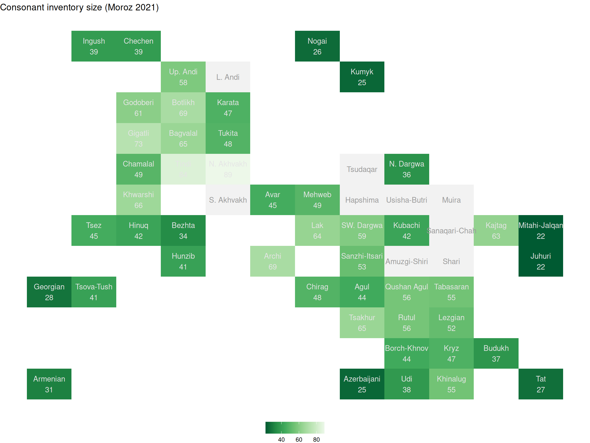
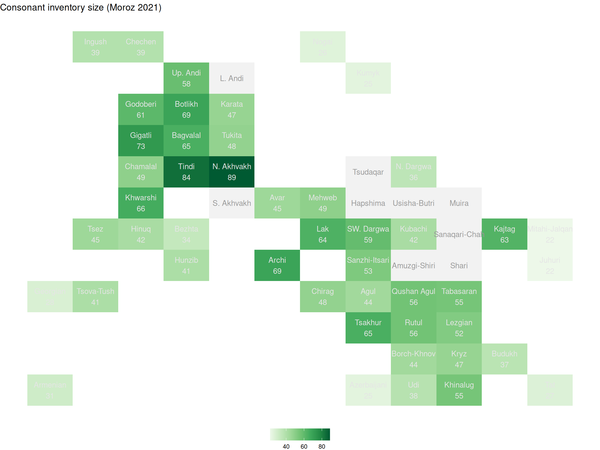
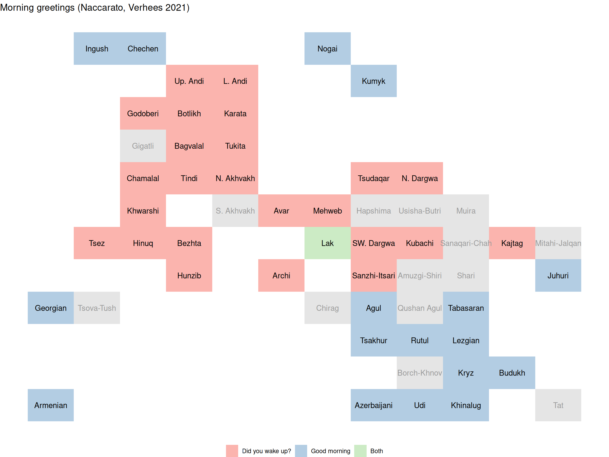

install.packages("RCaucTile")RCaucTile: Tile Grid Maps for East Caucasian Languages
1 Introduction
RCaucTile provides an R implementation of the East Caucasian Languages template, designed for generating tile maps for East Caucasian Languages in ggplot2 (see PyCaucTile for the Python version). It draws inspiration from the Typological Atlas of the Languages of Daghestan (TALD). The TALD project initially features three distinct map visualizations. This package extends this by introducing a new tile map visualization, which displays a rectangle for each language and allows for color-coding based on specific linguistic features.
2 Installation
Since RCaucTile is an R package, you should install R on your PC if you haven’t already done so. To install the RCaucTile package, run the following command at your R IDE so you get the stable version from CRAN:
You can also get the development version from GitHub:
install.packages("remotes")
remotes::install_github("LingConLab/RCaucTile")Load the package:
library(RCaucTile)It is important to cite R and R packages when you use them. If you want to cite RCaucTile, use the citation function:
citation("RCaucTile")To cite RCaucTile in publications, please use
Moroz, George (2025). RCaucTile: Tile Grid Maps for East Caucasian
Languages. R package.
A BibTeX entry for LaTeX users is
@Manual{,
title = {{RCaucTile}: {T}ile {G}rid {M}aps for {E}ast {C}aucasian {L}anguages},
author = {George Moroz},
year = {2025},
}3 How to use RCaucTile
The main utility of the RCaucTile package for researchers is a template of East Caucasian languages and their corresponding colors, which is taken directly from the Typological Atlas of the Languages of Daghestan. To see the template, you can call the ec_tile_map() function without any arguments:
ec_tile_map()
As you can see, all languages are color-coded according to their language branch: Nakh languages are brown, Andic languages are blue, Lezgic branch is green, and so on. This template sets the default distribution of languages.
The core of the package is a built-in dataset ec_languages that contains information about 56 languages. Most variables are self-descriptive, except for x and y, which define the location of each language on a grid (you can save it and modify it if you want).
ec_languagesThere are also two features from the Typological Atlas of the Languages of Daghestan:
morniing_greetingscontains values from the “Morning Greetings” chapter (Naccarato, Verhees 2021) from the Typological Atlas of the Languages of Daghestan. The languages of Daghestan can be classified into three groups according to whether they feature morning greetings including questions about the night’s rest (valueDid you wake up?), based on the combination of concepts like “morning” and “good” (valueGood morning), and both strategies (valueBoth).consonant_inventory_sizecontains consonant inventory sizes based on “Phonology” chapter (Moroz 2021) from the Typological Atlas of the Languages of Daghestan.
I expect that the user will load a table with columns language and feature and use it within the ec_tile_map() function. We will create the table on the fly, but it is more convenient to use read.csv(), read_csv(), read_tsv(), or read_xlsx() functions to load any table created in Excel or Calc.
df <- data.frame(language = c("Avar", "Chechen", "Mehweb"),
feature = c("value a", "value b", "value b"))
ec_tile_map(df)
Sometimes the name of the variable in the loaded table is not feature, so there is an argument feature_column in the ec_tile_map() function, where the name can be provided:
ec_tile_map(ec_languages,
feature_column = "morning_greetings")
ec_tile_map(ec_languages,
feature_column = "consonant_inventory_size")
It is possible to add title to the plot, using title argument:
ec_tile_map(ec_languages,
feature_column = "morning_greetings",
title = "Morning greetings (Naccarato, Verhees 2021)")To change the title position (it appears left by default), one can use the title_position argument:
ec_tile_map(ec_languages,
feature_column = "morning_greetings",
title = "Morning greetings (Naccarato, Verhees 2021)",
title_position = "center")ec_tile_map(title = "This is a Tile map of East Caucasian languages",
title_position = "right")It is really hard to understand the real value for each language when a numeric feature is used. So there is an additional argument annotate_feature that makes it possible to add values near the language names:
ec_tile_map(ec_languages,
feature_column = "consonant_inventory_size",
title = "Consonant inventory size (Moroz 2021)",
annotate_feature = TRUE)It is possible to use this with categorical features, however, one needs to keep track of the short values, because it looks messy:
ec_tile_map(ec_languages,
feature_column = "morning_greetings",
title = "Morning greetings (Naccarato, Verhees 2021)",
annotate_feature = TRUE)4 Changing the Default Colors
It is possible that the default colors provided by ggplot2 are not suitable for your plots. So ggplot2 provides several tools for changing them. The function scale_fill_distiller() will help to change the colors of numeric variables to one of the predefined palettes (Blues, BuGn, BuPu, GnBu, Greens, Grey, Oranges, OrRd, PuBu, PuBuGn, PuRd, Purples, RdPus, Reds, YlGn, YlGnBu, YlOrBr, YlOrRd). There is a direction argument that makes it possible to reverse the order of the colors in the palette.
library(ggplot2)
ec_tile_map(ec_languages,
feature_column = "consonant_inventory_size",
title = "Consonant inventory size (Moroz 2021)",
annotate_feature = TRUE) +
scale_fill_distiller(palette = "Greens")
ec_tile_map(ec_languages,
feature_column = "consonant_inventory_size",
title = "Consonant inventory size (Moroz 2021)",
annotate_feature = TRUE) +
scale_fill_distiller(palette = "Greens", direction = 1)
To define your own palette for a numeric variable, you can use the scale_fill_gradient() function.
ec_tile_map(ec_languages,
feature_column = "consonant_inventory_size",
title = "Consonant inventory size (Moroz 2021)",
annotate_feature = TRUE) +
scale_fill_gradient(low = "navy", high = "tomato")When the color scheme is clear and the annotate_feature argument draws the exact values of the feature, it makes sense to get rid of the legend:
ec_tile_map(ec_languages,
feature_column = "consonant_inventory_size",
title = "Consonant inventory size (Moroz 2021)",
annotate_feature = TRUE) +
scale_fill_gradient(low = "navy", high = "tomato")+
theme(legend.position = "none")The function scale_fill_brewer() will help to change the colors of categorical variables to one of the predefined palettes (Accent, Dark2, Paired, Pastel1, Pastel2, Set1, Set2, Set3).
ec_tile_map(ec_languages,
feature_column = "morning_greetings",
title = "Morning greetings (Naccarato, Verhees 2021)")+
scale_fill_brewer(palette = "Pastel1", na.translate = FALSE)Scale for fill is already present.
Adding another scale for fill, which will replace the existing scale.
To define your own palette for a categorical variable, you can use the scale_fill_manual() function.
ec_tile_map(ec_languages,
feature_column = "morning_greetings",
title = "Morning greetings (Naccarato, Verhees 2021)")+
scale_fill_manual(values = c("#D81E05", "#0070A1", "#00923F"), na.translate = FALSE)Scale for fill is already present.
Adding another scale for fill, which will replace the existing scale.